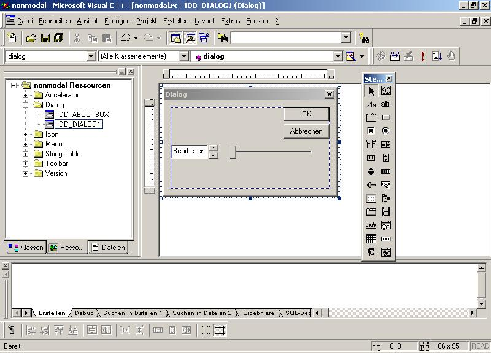
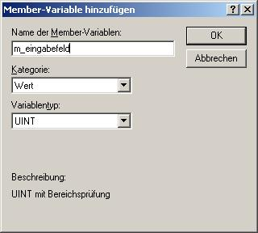
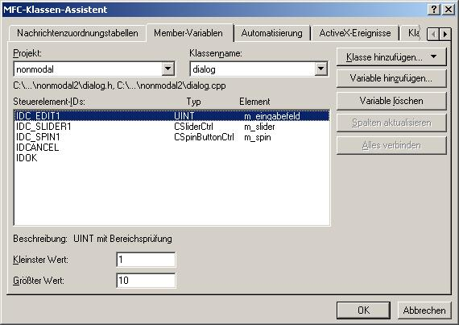
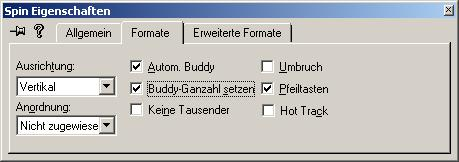
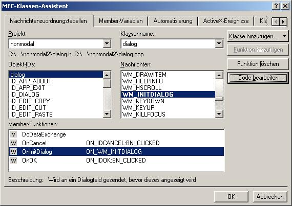
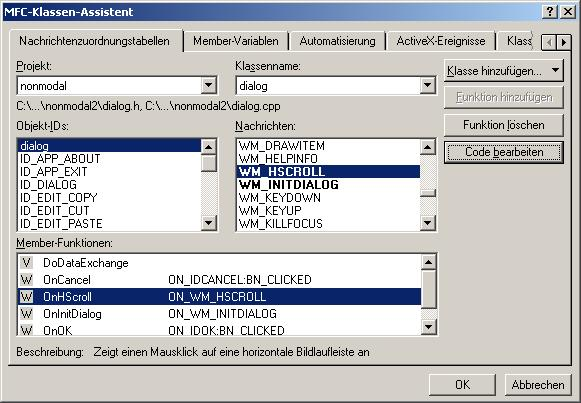
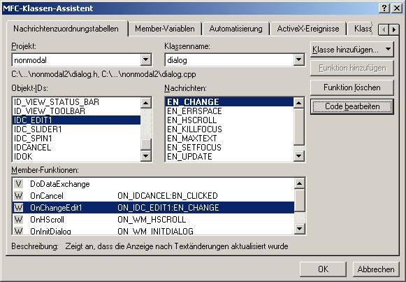

- Zuerst müssen dem Dialog die Steuerelemente hinzugefügt werden:
-> Auf die Ressourcenansicht wechseln

- Member Variablen für die Steuerelemente hinzufügen:
-> Klassenassistent, Member-Variablen
-> für das Drehfeld (SPIN) wird nur wegen eines MFC-Fehlers eine MemberVariable benötigt: Die Nummer wird größer, wenn man nach unten drückt und umgekehrt :-)

-> da die variable für das Eingabeld den Datentyp UINT hat, kann wie bei allen nummerischen Datentypen, bei kleinster und größter Wert eine Wertbeschränkung eingegeben werden, in unserem Fall 1 und 10.

- Um das Drehfeld mit dem Eingabefeld zu verbinden, braucht man nur folgende Schritte ausführen:
-> Menü Layout, Tabulator-Reihenfolge
-> Eingabefeld und Drehfeld müssen in der Reihenfolge hintereinander sein z.B.: Eingabefeld=1, Drehfeld=2
-> In den Eigenschaften des Drehfelds auf Formate wechseln und die Punkte 'Autom. Buddy' und 'Buddy-Ganzzahl setzen' aktivieren.

- Um den MFC-Fehler des Drehfelds zu beseitigen muss noch die Funktion OnInitDialog überschrieben werden:
-> Klassenassistent
-> Klassenname : dialog
-> Nachricht : WM_INITDIALOG
-> Funktion hinzufügen
-> Code bearbeiten

BOOL dialog::OnInitDialog()
{
CDialog::OnInitDialog();
// Anfangswert setzen
m_eingabefeld = 1;
// In den Dialog schreiben
UpdateData(false);
// Beseitigen des MFC-Fehlers
// Nach unten drücken Zahl wird aber größer
// Parameter 1 : Kleinster Wert des Drehfelds
// Parameter 2 : Größter Wert des Drehfelds
m_spin.SetRange(1,10);
// Die Werte werden eingegrenzt,
// wichtig für die grafische Darstellung des sliders
m_slider.SetRange(1,10);
return TRUE; // return TRUE unless you set the focus to a control
// EXCEPTION: OCX-Eigenschaftenseiten sollten FALSE zurückgeben
}
- Das Drehfeld und das Eingabefeld arbeiten nun schon zusammen, jetzt müssen noch Eingabefeld und Slider zusammenarbeiten. Zuerst programmier, dass sich das Eingabefeld automatisch verändert, wenn der Slider bewegt wird.
Dazu muss der Händler überschrieben werden, der aufgerufen wird, wenn der Slider bewegt wird : WM_HSCROLL.
Achtung:Dieser Handler wird für alle horizontalen slider und Bildlaufleisten aufgerufen. Sind mehrere vorhanden, muss entweder jedes Mal geprüft werden welcher den Handler ausgelöst hat, oder die einfachere Variante ist einfach alle zu bearbeiten ( so machs ich :-).
-> Klassenassistent
-> Klassenname : dialog
-> Nachricht : WM_HSCROLL
-> Funktion hinzufügen...
-> Code bearbeiten

void dialog::OnHScroll(UINT nSBCode, UINT nPos, CScrollBar* pScrollBar)
{
// TODO: Code für die Behandlungsroutine für Nachrichten hier einfügen und/oder Standard aufrufen
int wert;
// Aktuellen Wert des Sliders auslesen
wert = m_slider.GetPos();
// Wert in das Eingabefeld speichern
m_eingabefeld = wert;
// Weil eingabefeld eine uint variable ist
// und keine Controlvariable
// muss noch updatedata aufgerufen werden,
// für das wirkliche darstellen der Zahl im Dialog
UpdateData(false);
CDialog::OnHScroll(nSBCode, nPos, pScrollBar);
}
- Jetzt muss noch der Handler des Eingabefeldes bearbeitet werden, der jedes Mal bei Änderung des Eingabefeldes die Position des Sliders korrigiert:
-> Klassenassistent
-> Klassenname : dialog
-> Objekt-ID : IDC-EDIT1
-> Nachricht : EN_CHANGE
-> Funktion hinzufügen, Code bearbeiten

void dialog::OnChangeEdit1()
{
// TODO: Wenn dies ein RICHEDIT-Steuerelement ist, sendet das Steuerelement diese
// Nur wenns den Slider schon gibt
// stürzt sonst ab, wenn mans nicht abfragt
if (m_slider.GetSafeHwnd() != NULL)
{
// Eintragen der Werte am Dialog in die
// dazugehörigen Member-Variablen
UpdateData(true);
// Slider neu setzen
m_slider.SetPos(m_eingabefeld);
}
// Benachrichtigung nicht, bevor Sie nicht die Funktion CDialog::OnInitDialog()
// überschreiben und CRichEditCrtl().SetEventMask() aufrufen, wobei
// eine ODER-Operation mit dem Attribut ENM_CHANGE und der Maske erfolgt.
// TODO: Fügen Sie hier Ihren Code für die Benachrichtigungsbehandlungsroutine des Steuerelements hinzu
}
- Fertig